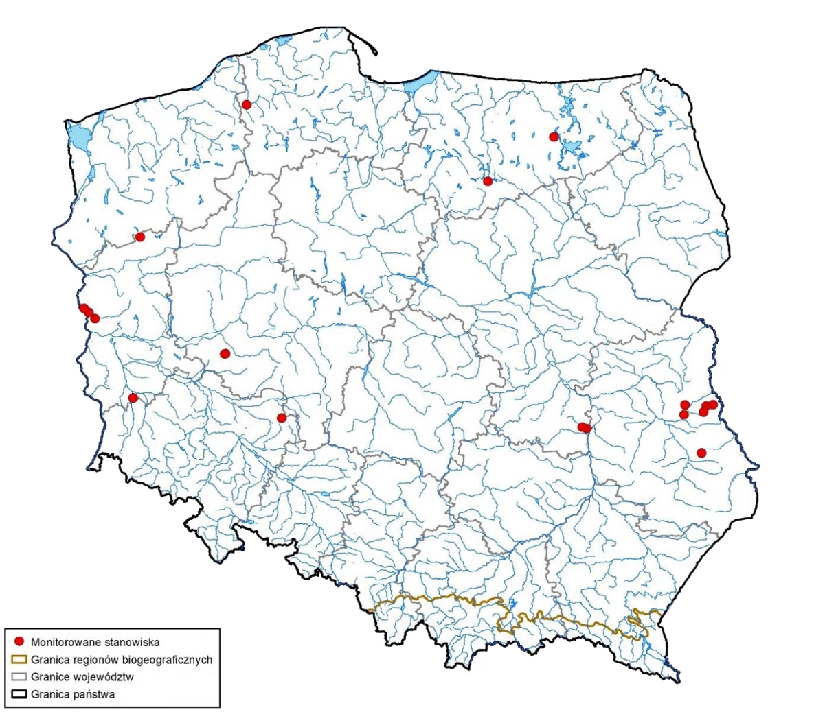

Gdzie występuje żółw błotny?
Choć kiedyś występował na większym obszarze Polski, obecnie największe populacje spotyka się na Pomorzu Zachodnim, w Wielkopolsce, na Mazurach oraz w dolinach dużych rzek. Żółw błotny wybiera ciche, słoneczne i dobrze nasłonecznione zbiorniki wodne, bogate w roślinność i wolne od intensywnej działalności człowieka.
